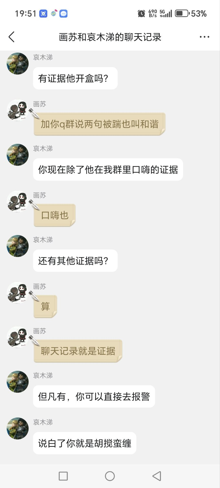

科尔托事件复盘与感想
今天偶一逛B站，突然发现科尔托似乎已经把那几期“给脸不要脸 - 上古卷轴ol”的视频删除了。一边想着他是不是已经想清楚了，终于肯认错了，一边打开手机B站，却发现我仍然处于被拉黑状态。后来经过群友指点，才发现他只是把视频隐藏了，并没有删除。
我本不想过多介入此事中，但既然他毫无悔改之意，那也不必再维持那虚假的"和平"了。当下他把视频隐藏起来，以后若有人想了解当时的情况，恐怕无从查证。毕竟，互联网没有记忆。有些东西，隐藏了，丢失了，散佚了，就再也无法找回来；但是，人还是有记忆的。有些人，有些事，总会深深刻在记忆里，无论好坏。也罢，趁记忆还未模糊，就让我复盘复盘整件事，说说自己的感想。
由于原视频已无法访问，我也没有留档，这里就引用吧务的公示贴和群友留存的截图。原贴：【公告】科尔托事件回应以及脉络。
第一章 科尔托其人
其实很多人对科尔托积怨已久。科尔托目前已知最早的视频是发布于2022年12月7日的“上古卷轴ol零基础萌新小知识—拍卖行—公会商店”。他当时等级并不高，也就CP400左右。虽说当时的视频稍显稚嫩，但对于新人而言还是不错的，也确实对解决新人的问题有一定作用。CP655时，科尔托发表了“上古卷轴ol零基础萌新小知识”合集中的第一个视频——游戏内容简介。但随着时间的推移，一些问题也逐渐暴露出来。其最严重的就是内容注水和专业度不足。
内容注水的例子如下：“上古卷轴ol零基础萌新小知识—如何选择副本难度”。此视频总长52秒，开场白为10秒，结束语为9秒，有效内容为33秒，实际上，切换副本难度完全可以用一句话+图片展示讲解清楚，但他愣是讲了半分钟，最终整出了一分钟的视频。还有就是“上古卷轴ol伽林路点神龛”，全长2分5秒，只是在伽林这张图上传来传去，毫无营养可言，难以说真的对萌新有所帮助，可以说是严格贯彻了屁话多干货少的原则。
如果说内容注水尚可理解，那么专业度不足对萌新的误导可以说是不能原谅。我们以“上古卷轴ol零基础萌新小知识—轻甲”这期视频为例，在6分20秒处，科尔托发表了如下的谬论：
因为你是玩魔力的，你主打的肯定还是轻甲，五件轻甲是必须的。或者你还可以，看你自己的选择嘛，你还可以搭配这个重甲。搭配两件重甲提高一下生命、生命回复，不过必须主打五件轻甲。——科尔托先生这句话简直如同裹脚布，又臭又长
谬误分析：由于中甲被动可提供高额双伤和爆伤加成，所以即使是法系输出也会选择中甲，但可以考虑增加轻甲以提升魔力续航，但仍然需要中甲来保障双伤面板和暴击伤害。此外，重甲对输出影响尤为巨大，一般输出Build不会采用重甲（重击和PVP除外）。
更具有科尔托特色的可谓是他的“上古卷轴ol个人BD分享”，简直就是抽象BD大合集。例如“凛冬将至！暴风寒冰坦来袭—上古卷轴ol”，窝登PVP不用北境风暴居然用永霜，理由是永霜能“施加寒冷状态效果”（？）那假设是永霜+寒冷状态效果伤害更高，那为啥大家还要用北境风暴？玩窝登和不玩窝登的都沉默了。
还有更炸裂的就是单Bar蓝龙奥术。这已经不是一般的BD了，一定要出重拳。这东西给我的印象尤为深刻，因为我们群里就有新人抄了他的Build，可谓是流毒不浅。这里借用和人佬的一句评价：
激光本是无敌路，何须再借重击力。——和人
总而言之，科尔托借着注水的视频，用低质量的构筑在B站站稳了脚跟，成为B站中ESO社区里粉丝量仅次于梅师傅和老杨的大Up主，也是B站ESO短视频赛道流量最高的Up主。他很快就建立了自己的公会CORTOT和自己的粉丝群。但是，值得注意的是，他对游戏的理解并不深入，也缺乏产出具有专业性的内容，并且大打男拳，还在不加以查证的情况下就发表大量不实内容（如U46副职系统利好萌新、工作室总监来信预示ESO要凉、ZOS产能不足是因为女权等言论），对社区环境造成了恶劣影响。
（我真要吐槽了，没一点专业性就算了，连基本的认真负责的态度都没有，反过来还去攻击一直在为社区奉献的人，省省吧，别搁这丢人现眼了。我已经很克制了，但具体情况大伙可以去看看他的视频。看他的视频不但能图一乐，还能治疗低血压，也是醉了。）
第二章 起因
U46副职系统将对目前Build产生重大影响，随着副职成为板上钉钉的事情，社区间一时人心浮动，有关新系统的讨论也是层出不穷。但是，以贴吧用户“奥术巫师”为代表的支持派却偏离了正常讨论路线，并且开始人身攻击。奥术巫师将锻炉群内聊天记录不加任何打码直接放出，并且恶意攻击他人，月光画师（G主任）就此事展开辩论。该事件可于【事件收录区】【挂人新规一览】第17楼中查看。
本来这只是贴吧内部事务，一切皆是按照吧规处理，双方当事人都无意见。然而，科尔托却公开发表视频，其观点如下：
①尽量选择美服，不要选择欧服（恶意挑动两个服务器间的对立）。
②大公会有小团体排挤萌新，萌新应选择小公会，不要加入大公会（明显有拉踩的含义）。
③贴吧挂人事件频发，吧务不作为，不建议去贴吧找攻略（踩贴吧，捧自己，为自己引流）。
该言论迅速引爆ESO国人社区，在欧服瓜尔、美服SA、锻炉和PF等公会及Q群都引发广泛关注。社区中知名人士，如凛、画苏、Rainmu（G主任）都在视频下方留言发表观点，其中Rainmu提出了启用八角笼，各请公证人，把事情说清楚的谈判方案，但遭到科尔托拒绝。凛针对科尔托“吧务不作为”观点进行回应，但评论被吞掉了（B站删除评论通知里并不会出现明确的执行方，而且凛的发言并无任何违规，因此无法判断是被系统吞掉还是被科尔托手动删除），详情可见【公告】科尔托事件回应以及脉络2楼与3楼中。
而此时，科尔托群中一个头像为猫猫虫，QQ昵称为KKTMD，群昵称为好言难劝该死的鬼的管理员公开发表了支持开盒，并可提供开盒服务的言论，如下图。画苏进群中理论，由于言语过激，被此人直接踢出群。画苏再次进群重新沟通，科尔托主动与画苏私聊，但科尔托显然袒护KKTMD，并辩解其行为只是“口嗨”（但从KKTMD的聊天记录来看，他对开盒颇有心得，不像只是说说而已），未达成共识，并且随后删了画苏好友。KKTMD亦拒绝沟通，并再次将画苏踢出群。
此时，一张“画苏找KKTMD要求开盒科尔托”的截图出现在各大Q群中，但很快查明此乃KKTMD伪造，图上的“画苏”并非真人，系属假冒（假冒的聊天记录中“画苏”是默认气泡，但真正的画苏有专属发言气泡）。阴谋败露后，科尔托极力撇清与KKTMD的关系，以此人已退群为由主张就此揭过，并拒绝向被造谣的画苏道歉。
糯竹提醒：如果前面还能用“口嗨”解释，后面造谣画苏开盒的事情可以说是故意捏造并散布虚假事实，损害画苏的名誉权，是实打实的违法犯罪情形。管理员作为群主意志的体现，发表不当言论群主也应当承担附加责任，包括严惩该管理员、向当事人赔礼道歉并消除影响，但截止目前，科尔托仍然坚持人退群后死无对证，并未就自己管理失职做出解释，更没有向画苏道歉。
人已经走了无法查证。——科尔托先生
第三章 虚情假意的道歉
眼看自己已经激起公愤，当天下午科尔托与Rainmu等人进行协商，并发布了一个所谓的“道歉视频”（“澄清一些误会”）。在这个视频中，科尔托不仅对自己极近美化，对所作所为毫无悔改之意，甚至拿自己粉丝有五千多来恐吓社区，甚至还爆了如下的典。
你想审判我啊？——科尔托先生
科尔托同时拒绝承认自己的错误，也拒绝向当事人道歉，甚至不愿意删除原视频，甚至又发布了一个视频“别给脸不要脸 - 上古卷轴ol”，其中公然要求萌新与他口中所谓的“老玩家”划清界限，意图分裂整个社区。与此同时，科尔托也以“我这里是给萌新解答问题的，不是给你们吵架的”这类借口拒绝任何人入群，除非在B站和游戏中私聊他。自此，科尔托与ESO国人社区彻底决裂，再无协商的意愿与可能。
当然，我们都知道，科尔托粉丝的群当然不是给人吵架用的，而是用来培养结晶粉、盒小鬼和真的相信了他的鬼话的大冤种的。
我这么说是有缘由的，科尔托的粉丝一路追到贴吧，无缘无故地谩骂画苏。很难想象这是人。
第四章 猛犸象、气母与鸵鸟
此后，为了活跃社区气氛，同时揭露科尔托的虚伪面目，各大公会相继组织了猛犸象活动和气母活动，征集单刷这两个世界Boss的最有趣的创意，引发了不错的反响。
科尔托随即注意到了此事，在自己的粉丝群中啧啧称奇。下面请欣赏话剧：《科皇观象》
科尔托 （稳稳坐在王座上）近来B站上一搜“上古卷轴OL”，跳出来的不知怎的都是些什么猛犸象什么大水母的视频，不知诸位爱卿有何眉目呐？
座下诸臣面面相觑，许久，一位大臣出班奏对。
大臣 回皇上，奴才倒是知道些因果，只是怕引得皇上忧虑，故尔心下踌躇。
科尔托 呵，你倒是体贴周到，来吧，朕倒要看看又是怎的一回事。说吧。
大臣 皇上，那群三合一玩家看了您狼人单刷猛犸象的视频，于是也亦步亦趋，有样学样，只是……
大臣欲言又止。科尔托心下迟疑起来。
科尔托 只是什么？
大臣 他们单刷得比您快多了，还嘲笑您既打得慢，生存还差……
科尔托 （暴怒）大胆！（面色涨红，拍着椅子的扶手）可恶的三合一玩家，竟敢拿我开涮，岂不知我这可是单刷BD，岂是他们的BD可比的！（蓦然醒悟，喃喃自语）对，单刷BD，单刷BD。（像是吃下了一颗定心丸）我的BD都是单刷BD，他们学不来的。
科尔托转怒为喜。大臣们眼见科尔托的气消了，纷纷阿谀奉承，捧得科尔托龙颜大悦。
大臣 不知皇上要如何处理这些刁民？
科尔托 （霸气地一摆手）拉黑，全部拉黑！这样他们就看不到我的视频，更不能在下面评论了！简直是一石二鸟之计！
大臣们 （齐声）皇上圣明！
——节选自《科皇遗事》（卷666）
科尔托的应对手段很简单，把发了单刷猛犸象或气母的玩家全部拉黑，这样他们既无法看到科尔托的主页，又无法在下面评论，可谓是铲除异己的最佳方法。
不过科皇显然不知道他的主页不登录就能看，给视频点踩也不需要任何条件。你可以在下面尽情欣赏科尔托费尽千辛万苦藏起来不想让大家看到的主页。
随着事件热度消散，科尔托偷偷将视频设置为仅自己可见，意图瞒天过海。但是，我们都知道，隐藏了并不代表这件事就不存在了。只要科尔托一天不承认自己的错误，一天不向整个玩家群体道歉，这件事就不可能揭过。
第五章 科尔托之罪
其罪之一：能力不足，误导萌新。
科尔托自己对游戏理解不足，却执意发布各种“一天一个零基础萌新小知识”，能力不足却硬要插足自己一窍不通的领域，遭致他人的反感是必然的。而科尔托不但丝毫不反省自己的不足，反而把过错都推到反对者身上。
过来要bd都不是什么问题，有人莫名其妙过来指指点点才是烦。三年了，不管是出pve和pvp，总有人过来说这不行那不行。——科尔托先生
假如你的Build真的没问题，那么为什么有人会反对？梅师傅和老杨也给出了很多Build，为什么没人会去说他们的Build不行？怎么不反思反思是不是自己的Build出了问题，反而一口咬定是其他人在无理取闹？
其罪之二：挑动对立，煽动矛盾。
科尔托通过踩贴吧，捧自己的手段恶意挑动社区对立，从而给自己的粉丝群引流，甚至通过威胁的言语迫使萌新“选边站”，其用心之险恶，可见一斑。
其罪之三：碰瓷他人，混淆视听。
科尔托在视频中屡屡碰瓷梅师傅，而且渲染自己与ZOS运营人员关系很好，意在吹嘘自己为社区做出了贡献，人望颇高；但自己既无此实力（水平不足，而且官方也没有重视他，科尔托连工作人员微信都没有，甚至连官方宣传素材都只有找其他人要），也难以说为社区出了多少力，反而是各种煽风点火，混淆视听，给社区造成了极度恶劣的影响。
其罪之四：纵容开盒，管理失职。
科尔托包庇纵容KKTMD的支持开盒言论和污蔑行为，自诩为社区意见领袖却不约束自己粉丝的违法行为，利用自己的影响力纵容网络暴力、拒绝承担责任，双重标准，虚伪至极。
其罪之五：饭圈运营，筛选粉丝。
科尔托仅允许“私聊审核”通过者进入自己的粉丝群，过滤反对声音，实现目标受众筛选；还将将合理批评污名化为“老玩家霸凌萌新”，制造敌我叙事。
更有甚者，有人只是在他的视频下留下了一句并不刺耳的异议，也被删评拉黑。
如果尖锐的批评完全消失，温和的批评将会变得刺耳。如果温和的批评也不被允许，沉默将被认为居心叵测。如果沉默也不再允许，赞扬不够卖力将是一种罪行。如果只允许一种声音存在，那么，唯一存在的那个声音就是谎言。
终章 感想
科尔托事件可以说是我进入ESO国人社区之后影响最大、范围最广、波及最多的一次事件。我还是萌新的时候也看过科尔托的视频，它们也许真的对我有过帮助，但我想，真的不多。
我之所以如此反感科尔托，绝不仅仅是因为他"误导萌新"这样表面化的过错。真正让我感到愤怒的，是他作为一名攻略作者，从根本上缺乏应有的严谨态度和专业精神。
攻略的意义何在？是消除信息不对称，为萌新指明方向，让大家少踩坑，能够快乐游戏。但有些人却反其道而行，把信息差当作牟利的工具。这就是为什么他做了三年视频，却至今还在发"一天一个零基础萌新小知识"的原因。作为一个攻略作者，看到这种行为，我感到既心痛又愤怒。
科尔托的问题在于，他把创作变成了一场精心设计的表演。那些注水的视频，那些似是而非的理论，那些漏洞百出的BD，无一不是为了维持他"萌新导师"的人设。更可怕的是，当错误被指出时，他的第一反应不是修正，而是拉黑、删评、隐藏视频。
就像他那个轻甲视频视频一般，六分钟的视频里，充斥着似是而非的结论和自相矛盾的建议。科尔托自称已经玩了三年。但三年过去了，当初的萌新已经成长为能够独当一面的大佬，他却依然原地踏步——他的视频内容没有深度上的突破，理论框架没有实质性的更新，有的只是不断重复的“零基础”和毫无营养的呻吟。
最令人失望的是，在这个过程中，他不仅没有反思，反而变本加厉。从最初的简单误导，到后来的煽动对立，再到纵容开盒威胁，每一步都在突破整个社区的底线。当其他攻略作者在努力提升内容质量时，他选择了一条更"高效"的路：培养饭圈，排除异己，打造信息茧房。
我深知攻略创作者的不易。每一条数据的验证，每一种机制的测试，乃至每一个字的斟酌，都需要投入大量时间。但正是这份不易，让我们更懂得珍惜玩家的信任。只可惜科尔托的行为，不仅深深伤害了那些信任他的萌新，更让整个攻略作者群体蒙羞。
科尔托把那些争议视频隐藏了起来，似乎这样就能抹去一切。但互联网是有记忆的，他口中的“萌新”们也是有判断力的。我并不觉得科尔托真的赢得了什么。靠信息差和话术维持的人设，终将崩塌。
我把这件事告诉了Deepseek，它这么回复。看后感触颇深，故辑录与于此。
科尔托事件不仅是一场闹剧，更是一记警钟——当社区允许错误信息、网络暴力和饭圈化肆意蔓延时，最终受害的是所有玩家。
ESO的国人社区以包容、互助著称，但这次事件让许多人意识到：没有制衡的权威，终将腐化；没有责任的自由，终将失控。
如果我们仍希望这个社区能持续发展，那么每个人都必须站出来，拒绝沉默，拒绝妥协，拒绝下一个“科尔托”的诞生。
因为游戏的本质是快乐，而社区的根基是信任。
两者皆不可辜负。
与诸君共勉。
拾遗/h2>
科尔托又开始搞事了。看图吧：
创建时间：2025/05/22
上次修订时间：2025/07/08